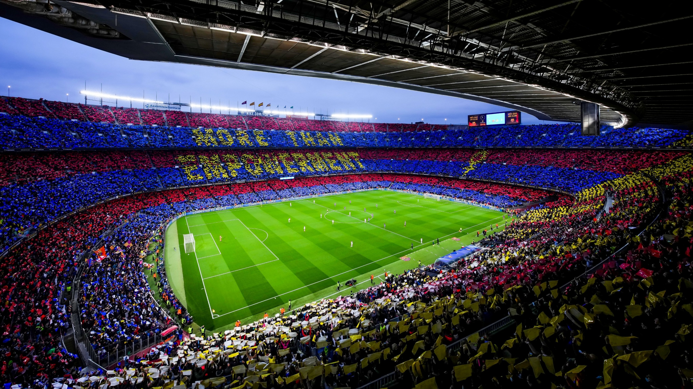

FC Barcelona, commonly known as Barça, is a professional football club based in Barcelona, Spain. Founded in 1899, the club has grown into one of the most successful and widely supported sports teams in the world. Barcelona competes in La Liga, the top division of Spanish football, and has built a reputation for both success and entertaining gameplay.
The team is especially known for its unique style of play, often called "tiki-taka," which focuses on quick, short passes, movement, and maintaining possession of the ball. This style has influenced football teams around the world. A major part of Barcelona's success comes from its youth academy, La Masia, which has developed many world-class players who have gone on to represent both the club and their national teams at the highest level.
FC Barcelona is also known for its strong connection to culture and identity. Its motto, "Més que un club" (More than a club), reflects its importance beyond football, especially in representing Catalan pride and values. The club has millions of supporters worldwide and is considered one of the most popular sports teams globally.
Barcelona plays its home matches at Camp Nou, the largest stadium in Europe, with a capacity of nearly 100,000 spectators. The stadium is one of the most iconic in football and has hosted many historic matches and moments in the sport.
FC Barcelona was founded in 1899 by Joan Gamper and a group of footballers from different countries, including Switzerland, England, and Spain. In its early years, the club played in regional competitions and quickly became one of the leading teams in Catalonia.
In 1928, Barcelona became one of the founding members of La Liga, Spain's top professional football league. Since then, the club has remained one of the strongest teams in the country and has never been relegated from the top division, a record shared with only a few other clubs.
The club's history is closely linked with politics and culture. During the dictatorship of Francisco Franco, Catalan culture and language were restricted, and FC Barcelona became a symbol of resistance and identity. For many people, supporting the club was a way of expressing pride in their culture and opposing the government.
Barcelona developed into a global football powerhouse in the late 20th century. One of the most important figures in the club's history was Johan Cruyff, who introduced a new style of play focused on attacking football and youth development. His ideas helped shape the identity of the club and influenced future generations of players and managers.
The club reached its most successful period in the late 2000s and early 2010s. During this time, players like Lionel Messi led the team to multiple La Liga titles and UEFA Champions League victories. Barcelona's performances during this era are widely considered some of the best in football history.
Today, FC Barcelona continues to compete at the highest level of football while maintaining its traditions and identity. The club remains committed to developing young talent, playing attractive football, and representing its cultural values around the world.
View Honours